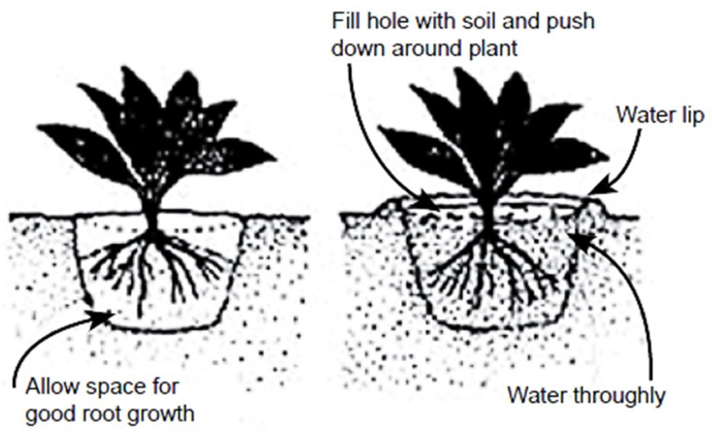
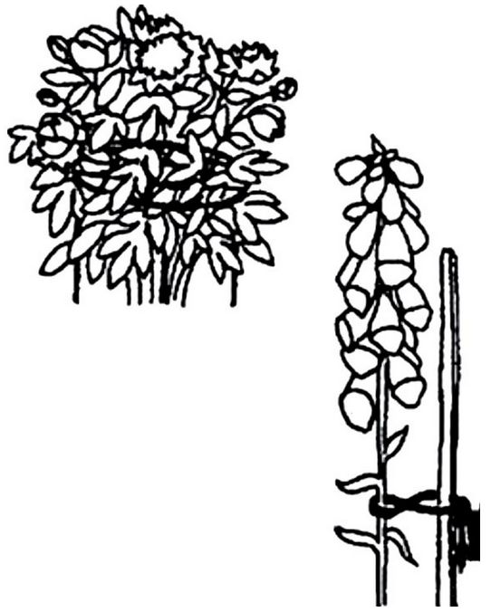
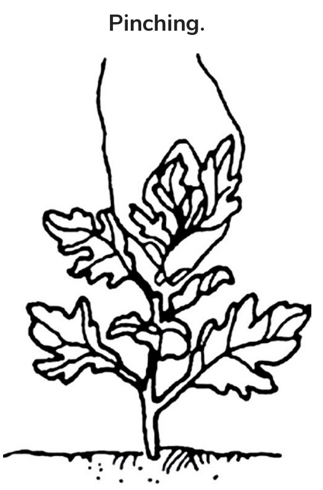
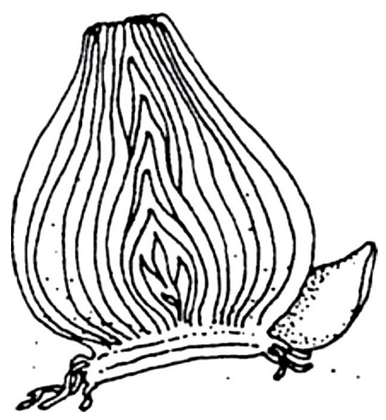
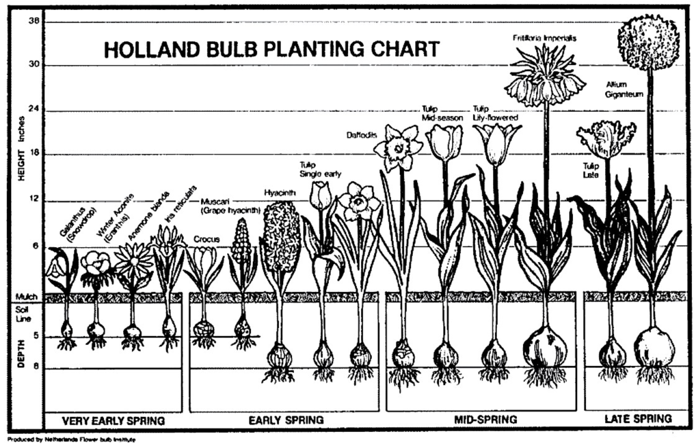

Whether you’re creating a welcoming entrance, a floral cutting garden or an attractive outdoor space, herbaceous ornamental plants will add the texture, color and beauty to your landscape. The keys to successfully growing these perennials, annuals and bulbs is learn how to select the right plant for the right location and understand its cultural requirements. While many resources are available from books and websites to plant workshops and seminars, many gardeners find the best wisdom comes from trial and error. So, have fun experimenting with plants and don’t be afraid to try new ones and move them to different locations in your garden.
Perennials have roots that live through the winter. They can regrow parts above-ground during the growing season. Although some perennials can last almost indefinitely, others may last only a few years. Perennial does not mean perpetual. However, perennials usually can be propagated asexually for additional plants and to prolong their vitality.
Perennials have a shorter bloom period than annuals. Some will bloom continuously if spent flowers are removed. Others will rebloom later in the same season.
Gardeners may come upon the terms “half-hardy” or “semi-hardy.” The terms mean “marginally hardy.” In severe winters, these plants will not survive. In mild winters with ideal conditions and sufficient mulch, half-hardy plants will survive.
Annuals complete their growth cycle in one year. To propagate themselves from year to year, annuals produce great quantities of seeds. If the flowers of annuals are cut before seeds can form, more blooms rapidly grow to assure a seed crop. Annuals usually produce more flowers than other types of flowering plants. They also flower earlier in their life cycle. Many annuals produce blooms from planting to frost.
Some annuals are perennial in warmer hardiness zones. Examples of perennials grown as annuals in Ohio are geraniums, dahlias, snapdragons, mealycup sage, pansies, and Iceland poppies.
Bulbs. This module has a section entitled “Bulbs”. Although all plants in this section are called “bulbs,” technically this is not correct. Plants in this section include true bulbs, corms, tubers, and rhizomes.
All bulb-type plants have underground storage parts. Bulb-type plants can survive dormancy without nutrients or moisture. In this sense, they are perennials. Some bulbs are planted once and last for years. Others last only a year or two. Non-hardy summer flowering bulbs must be planted each spring, dug up in the fall, and stored properly.
Biennials are another group of plants that are common in the home landscape. Many gardeners are familiar with hollyhocks, Canterbury Bells, most foxgloves, snow-in-summers, and money plants. Biennials produce only foliage and roots the first year. The roots survive the first winter. During the second growing season, the biennial blooms, produces seeds, and then dies. Biennials may reseed and appear to be perennial.
Gardeners usually purchase biennials from nurseries rather than grow them from seed. This avoids wasted space taken by biennials during their first, non-flowering year of growth. Allow them to go to seed in order to have plants the next season. Avoid using pre-emergent herbicides around biennials. Biennials require the same basic type of care as annuals and perennials.
Perennials, annuals, and bulbs give the home landscape color and foliage interest throughout the growing season. The broad range of bloom time and variety of flowers and foliage can produce continuous color and interest in a well-thought-out plan. Dried flowers, fruit, seed heads, and leaves may be left on plants for winter interest and as a source of food and shelter for birds.
Cultural Requirements for Herbaceous Ornamentals
Cultural requirements of site, site preparation, soil, drainage, selection, growing from seed vs. transplants, and care are generally the same for perennials, annuals and bulbs. Any special requirements will be addressed under each grouping. Site. Because there is a perennial, annual or bulb for almost every type of site, study existing conditions and choose the right plant for the site. Some plants may not bloom or may even die if the site conditions do not match their cultural requirements. Use reliable reference books to determine the cultural requirements of each species. Knowing cultural and site requirements also can prevent unnecessary use of chemicals on plants misdiagnosed as "sick."
Access to Sunlight
Sun. The definitions given here explain what is meant by sunny, part shade and shade locations.
- Sun: A least six hours of more of full sunlight.
- Part Shade: One-half day of sun, such as morning sun and afternoon shade. It also refers to lightly filtered sun through high tree branches.
- Shade: North-facing beds shaded by structures, woodlands with minimal direct sun exposure to ground level.
There are perennials, annuals and bulbs that will grow in each of these conditions.
Soils & Drainage for Herbaceous Ornamentals
Most perennials, annuals, and bulbs grow best in a loose, well-drained, moderately fertile loam with adequate moisture. Soils that drain poorly, especially in winter, can cause the crowns to rot, resulting in death of many otherwise hardy perennials. Poorly drained soils also will threaten the health of most bulbs.
Some perennials and bulbs listed for Zone 6 may survive in Zone 5 if grown in well-drained soil and heavily mulched for winter protection. Annuals are not affected by winter hardiness. The last frost in spring affects planting dates, and the first frost in fall ends the season for most annuals. The maps presented here provide a guide to these dates.
Growing from Seed vs Purchased Plants
Perennials, annuals, and bulbs can be purchased in several forms – seeds; dormant, bare-rooted plants; rooted plants in pots of various sizes; dormant bulbs; and pot-grown bulbs. Many perennials can be grown from seed, but they are more often purchased as transplants. Annuals are even easier to grow from seed, but most gardeners choose to purchase transplants. Bulbs are usually sold in a dormant state.
Mail-order nurseries ship dormant plants, growing plants, and bulbs at the correct planting time in your area. If you cannot immediately plant new stock, bare-root plants can be heeled in to a protected section of the garden. They also can be potted up and grown in a cold frame.
Plant bare-root and potted plants in a hole large enough to allow spreading out of the root system. Soak the roots of bare-rooted plants in a bucket of water for one-half hour just before planting. Plant at the same depth as they originally grew. Look for the original soil line on the plant.
When selecting transplants, choose those with characteristic foliage color, sturdy stems, and side branches. Roots should be abundant, but not potbound. Plant immediately if possible. If transplants must be held, store in a shady area and water as needed.
Planting Herbaceous Ornamentals

Plants should be spaced a distance equal to their mature width. Ten-inch plants should be planted 10″ apart. Clusters of three or more large plants or five or more small plants of the same color usually make a better visual impact than those planted singly.
Dig a hole that allows transplants to be at the same soil level as in the container. Loosen and spread roots to encourage new outward root development. Water immediately after planting.
Fertilize based on soil-test results. Use either a time-released fertilizer that will last all season, or plan to apply water-soluble fertilizer two or three times during the growing season. Liquid 20-20-20 or 23-19-17 formulations should be applied bi-weekly to annuals. Follow product instructions for dilution rates.
Gardeners who grow their plants from seeds will notice the wide difference in seed size. Some seeds are so small that they should be mixed with sand before sowing. This allows better control over spacing. Seed companies offer some very fine seed in pelletized form. Plants that have very small, dust-like seeds are often purchased as transplants because of the difficulty in handling these seeds.
Follow the steps outlined in the Plant Propagation module to grow most perennials and annuals from seed. Seed packets should provide essential information for germination and any special treatment of seedlings. Seeds can be started outdoors directly in a bed or in some protected area like a cold frame.
Watering Herbaceous Ornamentals
Apply water when the soil becomes dry. Newly planted transplants quickly wilt if conditions are dry and windy. Water young and newly planted plants more frequently than mature, established plants. Keep soil moist to a depth of 4″ to 5″. If rainfall does not provide this moisture, apply water at a rate of 1″ per week. Try to keep water off foliage. A 2″ layer of mulch that does not touch the crown of the plant will help conserve moisture. A new layer of mulch may be applied each spring after the soil warms to maintain a 2″ depth of mulch.
Management of Perennials
There are many reasons gardeners choose to grow perennials. Perennials do not need to be planted each year. A predominantly perennial garden changes throughout the season. Perennials are easy to divide and share with other enthusiasts.
Design Challenges of Perennials
Successful color combinations and continual color throughout the season are challenges facing gardeners who choose to grow perennials. Plot the blooming periods of the plants you choose on a linear calendar. This aids in developing continuous bloom and combining color combinations successfully.
Large plants may be planted singly. Plant smaller plants in clumps or “drifts” of three, five or seven. Avoid planting in precise rows. Informal shapes are easier to maintain than formal groupings. Curved lines, varied plant heights, masses and textures result in a more natural appearance.
Careful attention to foliage is important with perennials because few perennials bloom for more than a few weeks. Texture, form, height and color should be combined carefully. In addition to a linear calendar, plotting the garden to scale will ensure that these factors will be combined successfully.
Growing Perennials from Seed
Many perennials grown from seed take one to two years before they flower. If you have the patience, equipment, and the space, grow perennials from seed; it is substantially less expensive. Many perennials may be seeded in June, then transplanted in early autumn.
Purchasing Transplants
When purchasing potted perennials at a nursery, avoid selecting plants in bloom unless you must be assured of a specific color. If possible, slip the plant from the pot to check if the plant has become root bound. Remove any flowers at planting time to promote root establishment. The price of plants relates to the size and age of the plants. Newer cultivars are more expensive than cultivars that have been marketed for several years.
Dividing & Transplanting
Gardeners who enjoy collecting perennials find that as plants mature, they may wish to relocate some of them. Transplant perennials in early spring just after growth starts or in early September. To relocate perennials during the main growing season, remove all flowers and cut back foliage. Trimming of flowers and leaves reduces transplant shock. Water as needed for good establishment.
Fertilizing Perennials
Perennials often stay in the same location for years. This means that selection and preparation of the site for new plantings are vitally important. Organic matter worked into the soil at planting time can provide nutrients and improve aeration and drainage.
For perennials that require fertilization, apply in spring as new growth begins. Broadcast one pound of 5-10-5 or 6-12-6 over 100 sq. ft. of area. Make another 1-lb. application eight weeks later. Wash off any fertilizer that remains on the foliage. Astilbe, chrysanthemum, delphinium, lupines, and summer phlox are perennials that should be fertilized annually. It is always best to follow recommendations of a soil test. Test soil every three years. There are perennials that don't like to be fertilized once planted. Sedum, Baptisia and wildflowers don't require additional fertilization in most cases.
Mulching Perennials
Winter mulching helps to prevent winter injury from heaving. After soil has frozen, apply a layer of coarse mulch. Four inches of pine boughs, pine needles, or straw are suitable. Pull back mulch from plant crown as soon as new growth begins in spring. Winter mulching of perennials is especially important in the following situations:
- When marginally hardy perennials are grown.
- For newly transplanted or divided perennials moved in fall.
Staking

Perennials with heavy flower heads or long, thin stems may require staking. The weight of water or wind can easily damage flowers and stems. Examples of perennials that usually need stakes or supports include delphinium, foxglove, hollyhocks, selected asters and mums. Stake when plants are about 6″ tall, so supports are hidden by foliage later in the growing season.
Deadheading
The removal of spent blossoms is called "deadheading." Many perennials will continue to bloom if faded flower heads are removed. This is especially true of dianthus, coreopsis, and Shasta daisy. Some perennials will bloom again later in the season. Examples of perennials that will produce a second flush of blooms if flower stalks are cut back to the ground include delphinium, catmint and yarrow.
There are different methods of deadheading. Some plants will rebloom on the same flower stalk. In this case, it is necessary to remove only the dead blossoms. Campanulas and balloon flowers will rebloom if faded blossoms are removed. Other perennials are deadheaded by cutting off old flower stalks to where the new bud shoots appear. Salvia should be deadheaded in this manner. When deadheading, look for the location of the second bud or set of buds.
Although faded flower heads should be removed on all plants, only some will produce new blooms. Others will not. Removing spent blooms diverts energy that would otherwise go into seed production.
Garden markers and record keeping are very helpful with certain perennials. It is easy to forget about perennials that appear late in spring or die back before the rest of the garden. They are often "rediscovered" be accidentally digging into them. Good candidates for markers are butterfly weeds, Oriental poppies and balloon flowers.
Dividing
Most perennials decline with age and should be divided every three or four years. New growth can be noticed on the outer edges of clumps. Divide perennials when you notice the following:
- A dead center formed in the crown area with a ring of growth around it.
- Blooms have become sparse and smaller.
- Plants looking obviously crowded.
Do not divide perennials when they are in bloom. Divide midsummer and late-summer bloomers in spring (April or early May) when growth is 2" - 3" high. Divide spring-blooming perennials in late Au-gust or September.
To divide perennials, dig the entire plant and separate it into sections, or take divisions from the edge of the clump while it is still in the ground. Ornamental grasses have tightly tangled, tough root systems that are difficult to divide. Do not hesitate to cut through a large clump of roots with a sharp ax.
Some perennials are rarely divided or moved unless absolutely necessary. These include gas plants, peonies, tree peonies, foxtail lilies, goat’s beards, butterfly weeds and bleeding hearts.
After a killing frost, remove dead stems and foliage. Leave a piece of stem a few inches long to assist in locating plants the following spring.
Divide a hosta plant if you have access to one. Begin by digging the entire plant. Next, use your hands, a garden knife or the serrated edge of a shovel and split the plant into halves, thirds, quarters or other fractions allowing at least three eyes or shoots per division. Replant the divisions in the garden.
Perennial Pest Management
Powdery mildew is probably the most troublesome disease of perennials. It looks like the plant is covered with a dusting of white or gray. It is unsightly, even though plants are generally not killed by the infection. Powdery mildew usually appears in summer when fungal growth is promoted by high humidity.
To discourage powdery mildew, choose sites that are sunny and have good air circulation. Maintain good air circulation by thinning clumps and providing room for plants to grow. Water early in the day and remove and destroy any infected foliage. Powdery mildew can overwinter on infected foliage and spread to new foliage the following year.
Insects are not usually troublesome on perennials, but the ones listed here may cause damage – aphids, plant bugs, leafhoppers, mealybugs, scales, thrips and whiteflies, red spiders and other leaf miners. Slugs are often a problem, especially in shaded gardens where there is a lot of moisture and mulch is routinely applied.
These are the primary problems that may arise with perennials. For assistance in identification and treatment of specific diseases and insect pests of perennials, see Extension Bulletins and Fact Sheets.
Management of Annuals
Planting annuals runs a close second to lawn care as the most common home-gardening activity. Abundance of flowers and a long blooming period, along with low cost, range of size, shape, color and adaptability make annuals garden favorites. Geraniums, impatiens, petunias, marigolds, begonias, pansies (actually a perennial treated as an annual), salvia and vinca are among the most popular annuals.
Ohio is third among states in the United States for producing bedding plants. This means that gardeners can choose from many types of locally grown annuals.
Selecting Annuals for the Home Garden
Gardeners usually choose annuals for bedding or border plantings. They enjoy the mass of bright colors most annuals produce from spring to frost. Annuals also make excellent quick fillers where permanent plants have not yet grown large enough to give a mature appearance. Since most annuals have small root systems, they are easy to transplant and can be planted over spring-flowering bulbs.
Annuals for Containers, Screening and Drying. Annuals grow well in containers, planters and flower boxes. They can tumble down walls and soften sharp edges. Selections for these uses are described as cascading. Their growing habit causes them to trail over the edge of their growing space.

Some annuals produce fast, upward growth. Fast growing annual vines can produce privacy screening or cover unsightly walls in just weeks. Annuals suitable for screening or covering include cathedral bells, hyacinth bean, moonflower, morning glory, scarlet runner bean, and vining nasturtium.
Some annuals are grown for drying and using in arrangements and wreaths. They are called “everlastings.” Popular everlasting annuals include celosias, amaranthus, strawflowers, globe amarynths and zinnias.
Growing Annuals from Seed
Some annuals must be started indoors during late winter or they will not have enough time to reach maturity. Annuals that have a long growing period before they reach maturity include lisianthus and ageratum. On the other hand, annuals that can be easily sown directly outdoors include marigolds, nasturtiums, cosmos, cleomes, California poppies, larkspurs, portulacas, and sweet alyssums.
When growing annuals from seed, pinch young seedlings to increase the number of blooms. When young plants are two to four inches tall and have three to four sets of leaves, pinch out the central stem as shown in the illustration. This encourages side branches that produce a bushier plant that can support more flowers.
Growing Annuals from Transplants
Annuals are most often purchased as plants in spring and planted after the last frost. Some annuals can take light frost and may be planted a little earlier. They include pansies, snapdragons, stocks, and calendulas.
Once annuals are properly transplanted into an appropriate garden site, they require minimal care. Remove spent blooms for continuous blooming. Some annuals are called self-cleaning. This means that they drop spent flowers, looking neat with less care. The impatiens is an example of a self-cleaning annual.
Overwintering Annuals
Some gardeners choose to “overwinter” certain annuals or tropicals (plants such as hibiscus which are grown in tropical climates). Many gardeners keep their geraniums or hibiscus from one year to the next. This provides plants for inside the home during winter, and it reduces the cost of new plants in the spring. Begonias, colocasia, burgmansia and coleus are other annuals/tropicals that gardeners frequently winter.
Annual Pest Management
Annuals occasionally become infected with the following diseases - leaf spot, powdery mildew, rusts, and wilts. Common insect pests that affect annuals include aphids, spider mites, plant bugs, Japanese beetles, and slugs. Refer to reference materials for plant-specific disease and insect problems.
All-American Selections
Each year new vegetable, annual and perennial varieties are introduced. Some are given recognition as All-America Selections (AAS) winners. These plants are rated as outstanding by private, commercial, and government evaluators. The gardener can learn if a variety is AAS rated by reading seed catalogs and gardening magazines or asking knowledgeable garden-store staff. All-America Selections are also available as transplants.
Bulbs
Bulbs provide a lot of color in a small space, with minimal effort from the gardener. Bulbs can lengthen the time a flower bed displays color. Bulbs bloom before winter is over and are some of the last flowers to display in fall. The foliage of most bulbs is spiky, creating textural interest.
During the growing season, bulbs produce foliage and store up a reserve of food for the next year’s flowering. Bulbs must store up energy during the growing season for continued vigorous growth and flowering.
Daffodils are poisonous to deer, so deer leave them alone.
Bulb Types

Truncate bulb cross section
True Bulbs. A true bulb consists of a modified underground stem surrounded by modified leaves that contain stored food for the plant. There are two types of bulbs - tunicate and scaly. Tunicate bulbs have a paper-like covering or tunic that protects the scales. Inbricate bulbs have scales that are not protected and therefor care is needed so that they don’t dry out. Daffodils and tulips are examples of tunicate bulbs, and lilies (not daylilies) are inbricate types.
True bulbs have scales held together by stem tissue called a basal plate. Hardy true bulbs usually bloom in spring. They go into a state of rest in summer. After a period of low temperature, they begin growing again in fall and early winter. Tulips, daffodils, and lilies are common examples of true bulbs.
Corms. A corm is a compressed stem. It is round, solid, and somewhat flat. It contains stored food with a bud on the top. Like true bulbs, it has a basal plate. Crocus and gladiolus are examples of corms. Glads have fibrous and contractile root systems, while all other bulb plants have only fibrous systems. During the growing season, the glad corm that produces the current season’s flower shrivels as stored food is used up. The contractile root system pulls down on the new corm as it forms on top of the old flowering corm. This special system keeps glad corms at the same soil depth.
Tubers are swollen underground stems flattened at one end. Although tubers vary in size and appearance, all are thick, solid bulbous organs. All tubers have “eyes” or buds on the surface from which new growth begins. Tubers do not have scales or basal plates. They have rough, leathery skin. Examples of tubers are begonias and dahlias.
Rhizomes are thick, swollen underground stems with no basal plate or scales. They usually grow horizontally, just below or at the soil surface. They often spread easily. Irish and lily-of-the-valley are examples of rhizomaceous plants.
Bulb Site Selection
Excellent drainage is critical for almost all bulbs. Bulbs will rot if the soil remains wet, especially during the dormant period. Avoid low areas or sites where water does not drain quickly. Raised beds or soil amendments should be considered for sites with poor drainage. Alternatively, choose water-tolerant bulbs like camassia or leucojum.
Choose a site in full sun to partial shade with protection from hottest midday sun for most bulbs. Afternoon protection is especially important for summer-blooming bulbs. Give flowers with red pigmentation afternoon protection to keep the color of their blooms from fading.
Spring-flowering bulbs will grow well under or near large deciduous trees. This is because trees are not leafed out when bulbs are blooming. Bulbs planted in full sun will bloom earlier than those in partial partial shade. Planting in full sun may result in earlier blooming and frost damage to the flowers. Slightly increasing the planting depth will negate this tendency toward blooming too early.
Bulbs are adaptable to rock gardens and woodland plantings. Random, nonformal placement of bulbs is called naturalizing. Spring-flowering bulbs can be planted in lawns for a naturalized look. However, the need to mow conflicts with the requirement to keep the bulbs’ foliage intact. Some gardeners plant massed areas of spring-flowering bulbs, then dig and move them after flowering. This allows beds to be replanted with other plants.
Plant Selection
There are many bulbs, corms, rhizomes, and tubers from which to choose. Most gardeners plant crocus, daffodils, tulips, iris, and gladioli. Try other lesser-known bulbs, such as scilla, puschkinia, ranunculus, muscari, tigridia, winter aconite, allium, anemone, and chionodoxa, among many others. Most of these selections will reward the gardener by multiplying from year to year
Bloom Timing
With careful selection, it is possible to have some bulb-type plants in bloom during the entire growing season. The spring bulbs have further subdivisions of bloom time. They are described as “early,” “midseason,” and “late” spring bloomers. This information is provided by commercial growers so you can plan a succession of blooms.
Purchasing Bulbs
Purchase from reputable nurseries and mail-order companies that guarantee their stock and provide named varieties. These companies do not collect from dwindling populations of wild plants. Reputable nurseries propagate their bulbs rather than gathering them from the wild. Gathering from the wild has threatened many native species, such as snowdrops and jack-in-the-pulpits, with extinction. Nursery- propagated bulbs are fairly uniform in shape and size, whereas gathered bulbs vary in size and may be misshapen.
When purchasing bulbs at a garden store, choose those that are heavy and feel solid. Choose the largest bulbs available. They will have the most stored energy for flowers and foliage. Avoid bulbs that are nicked or soft. The skin on the bulbs should be smooth and free of any injury. The basal plate must be intact. Handle all bulbs with care, even while dormant.
When purchasing bulbs, buy early because most bulbs grow better if not kept out of the ground too long. True lily bulbs should not be left dry or uncovered. They will become limp and grow poorly.
Planting Bulbs
Bulbs make the biggest impact when they are planted in groups. Their splash of color is lost when they are spaced out in single rows. However, large, showy specimens, such as the giant alliums, may be planted singly. Plant bulbs in the garden with annuals, perennials, and shrubs. Bulbs can be planted singly with a bulb planter or in groups where a large planting hole has been dug. Bulbs can be used in containers for splash of color.
Work soil well to prepare new beds for spring flowering bulbs. The quality of soil under the bulbs is especially important. Loose soil below the bulbs is important for root development. If the soil is heavy clay, mix in one-fourth to one-third organic matter (compost, aged bark, peat) by total volume. Add fertilizer based on a soil test or at a general recommendation rate of three pounds of 5-10-10 per 100 square feet.
When to Plant. The inexperienced gardener may become confused about when to plant specific bulb-type plants. Not all bulb-type plants are winter hardy. Those that are not must be planted in spring after the frost-free date. They then are dug in the fall and stored during the winter for replanting the following spring. Common members of this group include gladioli, dahlias, cannas, caladiums, and tuberous begonias.
Plant hardy spring-flowering bulbs from late August until the soil freezes. Daffodils should be planted in September or early October because a longer period is necessary for root development, before soil freezes and all growth stops. Fall blooming bulbs are planted in August.
Depth. Planting depth and distance apart varies with bulb size. Generally, the top of the bulb should be planted at a depth equal to three times the bulb’s diameter.
Water thoroughly after planting. This helps to remove any air pockets that may remain around bulbs after planting. Also, moisture is important to begin root growth. Plant gladiolus corms at a depth of four to five inches and six inches apart. Although this may seem unusually deep, glads need to be anchored deeply to support the flower stalk. Fertilize lightly as the flower spike develops. Stagger planting over two months, beginning as early as May, to produce continuous blooms.
Plant tuberous plants outside in May after danger of frost is past. Dahlias, tuberous begonias, cannas, and caladiums are four tuberous-type, nonhardy plants commonly grown in Ohio. They each have special requirements to initiate sprouting early in the growing season. They all must be dug in fall and stored under specific conditions over winter.
Lily bulbs have some special requirements for planting depth. There are two groups of lilies -those that form basal roots and those that have both basal roots and additional adventitious roots on the stem.
Follow planting depth recommendations given on packaging. Lilies that have both stem and basal roots usually are planted at least five inches deep. Those lilies with only basal roots should usually be planted at a depth equal to 2-1/2 times the diameter of the bulb.
%rfloat text-align=center margin-top=0px margin-right=0px margin-bottom=5px margin-left=5px border='1px solid gray'

Storing Bulbs
Store non-hardy, bulb-type plants in a cool, well ventilated place during winter. After the first frost, dig dahlias carefully with a fork and lift. Allow tubers to dry, then store. Dig and lift gladiolus in late fall and store. Caladiums begin to fade as the growing season ends. Gradually reduce watering and allow to go dormant. Begonias are dug and stored after frost has killed above-ground foliage. These plants are popular with many gardeners, despite the extra care they must be given.
Bulb Care & Maintenance
Watering & Fertilizing. Water all bulbs during times of growth and especially during foliage and bloom development. Irrigate summer-flowering bulbs during dry weather. Keep water off foliage and blooms.
Fertilize tulips as foliage appears and make another application after flowering. Fertilize all other spring-flowering bulbs after flowering. Apply two pounds of 5-10-10 or 6-12-12 per 100 square feet. Daffodils and tulips should be fertilized again in early to mid-August.
Mulching. It is especially important to mulch after planting if bulbs are planted very late in fall. Mulch insulates the soil, keeping it warmer longer so root growth can occur. If marginally hardy bulbs are heavily mulched to survive winter, pull back the mulch toward the end of winter. This prevents premature growth as the sun warms the soil.
Care After Flowering. Remove the flower stalk as the blossoms begin to fade. For good bulb growth and rebloom the following year, do not disturb foliage until it begins to yellow. Cut off all faded foliage. Braiding the foliage is not recommended.
Propagating Bulbs
Some bulb plants must be dug and divided periodically to retain plant vigor. Some lilies can increase so rapidly that division is necessary. Thin, crowded stems and noticeably fewer, and/or smaller blooms signal the need to divide. Divide and transplant during the dormant period.
Many of the minor bulbs, such as snowdrops, multiply readily without loss of quality. They are used in naturalized areas and in the landscape to fill in as ground cover.
In the case of tulips, bulblets form at the expense of the parent bulb. This causes flower size to decrease and, eventually, the bulb ceases to flower. For perennial use, choose species or botanical-type tulips. They multiply without decreasing in quality. Hybrid tulips often perform as annuals and are dug and thrown out at the end of the season.
Tuberous and rhizomatous plants should be divided as shown in the illustrations. Each division must include a piece of the stem or crown with an eye.
Lily bulb scales can be detached and used for propagation. Bulb-type plants propagate by making new, smaller versions of themselves - bulbets, cormels, and bulbils. They also produce seeds. Smaller offshoot bulbs or cormels can be detached from the main bulbs. These smaller bulbs will flower in one to three years. Aerial bulblets (bulbils) form where the leaf meets the stem on various lilies. These will produce flowers two to three years after planting.
Although there are other methods of propagation, they are not commonly used by the home gardener. Growing bulbous plants from seed is impractical for most gardeners.
Pest Management of Bulbs
Squirrels, chipmunks, and mice dig and eat tulip, crocus, Chionodoxa, and lily bulbs. To deter them, try spraying the bulbs with repellents or protecting the bulbs with a wide wire mesh. They will not eat or bother daffodils, hyacinths, and fritillarias.
Aphids, spider mites, leaf hoppers, stalk borers, thrips, viruses, fungal diseases, and slugs will attack bulb-type plants. The iris borer is a particularly troublesome insect pest in Ohio. Fungal diseases that attack roots and bulbs can be discouraged by planting where drainage is excellent. Fact sheets provide information on bulb problems.
Herbaceous Ornamental Resources
Recommended Resources:
- Adams, D. 2004. Restoring American Gardens. Timber Press.
- Armitage, A. 1989. Herbaceous Perennial Plants: Treatise in Their Identification, Culture, & Garden Attributes. Varsity Press, Inc.
- Armitage, A. 2001. Armitage’s Manual of Annuals, Biennials, & Half Hardy Perennials. Timber Press.
- Armitage, A. 2004. Armitage’s Garden Annuals. Timber Press.
- Armitage, A. 2008. Armitage’s Garden Perennials. Timber Press.
- Armitage, A. 2010. Armitage's Vines & Climbers. Timber Press.
- Bryan, JE. 2002. Bulbs. Timber Press.
- Branhagen, A. 2016. Native Plants of the Midwest. Timber Press.
- Brenner, J & Cohen, S. 2010. The Nonstop Garden. Timber Press.
- Carter et al. 2007. Perennials: The Gardener’s Reference. Timber Press.
- Clausen, RR. 2015. Essential Perennials. Timber Press.
- Cohen, S & NJ Ondra. 2005. Perennial Gardener’s Design Primer. Stoney Publishing.
- Darke, R & Tallomy, D. 2014. The Living Landscape. Timber Press.
- DiSabato-Aust, T. 2006. The Well-Tended Perennial Garden Planting & Pruning Techniques, Expanded Edition. Timber Press.
- DiSabato-Aust, T. 2009. Well-Designed Mixed Garden. Timber Press.
- Druse et al. 2015. The New Shade Garden. Tabori & Chang.
- Gardener, J. 2001. Heirloom Flower Gardens: Rediscovering & Designing with Classic Ornamentals. Chelsea Green.
- Knapke, D & Beck, A. 2003. Annuals for Ohio. Timber Press.
- Martin, T. 1999. Heirloom Flowers: Vintage Flowers for Modern Gardens. Fireside Publishing.
- Owen, J & Gavin, D. 2004. Gardens Through Time. BBC Publishing.
- Rainer, T & West, C. 2015. Planting in a Post-Wild World. Timber Press.
- Roth & Schrader. 2000. Hot Plants for Cool Places. Timber Press.
- Taylor's Guide to Bulbs. 1961. Houghton Mifflin Co.
- Whistler, WA. 2000. Tropical Ornamentals. Timber Press.